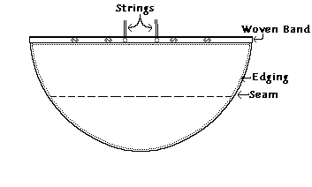
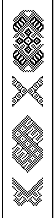
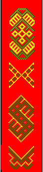
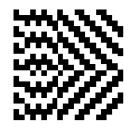
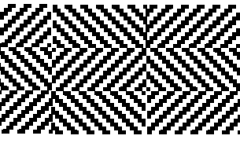

Reconstruction-drawing of the cloak, after Nockert (used without permission)

Black & White and Color Diagrams of the tablet-woven band; after Nockert. Note that the actual colors of woven design are my estimate based on a black and white photo of the pattern and a general description ("the pattern is yellow, orange, and green against a red ground"). The band is 4.5 cm (1.8") wide, and was sewn on as a completed edging. A green piece of string was sewn onto the outer edging of the band.
Diagram of the selvage of the broken 2/2 lozenge twill; after Nockert
Diagram of the broken 2/2 lozenge twill; after Nockert. The pattern reverses every 30x11 threads.Go to Cloak Page
Some Clothing of the Middle Ages, by I. Marc Carlson, Copyright 1996 This code is given for the free exchange of information, provided the Author's Name is included in all future revisions, and no money change hands-